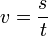
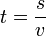

Gerak Lurus Beraturan (GLB)
Gerak Lurus Beraturan (GLB) adalah suatu gerak lurus yang mempunyai kecepatan konstan. Maka nilai percepatannya adalah a = 0. Gerakan GLB berbentuk linear dan nilai kecepatannya adalah hasil bagi
jarak dengan waktu yang ditempuh, dengan rumus  atau dengan kata lain  .